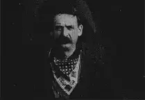
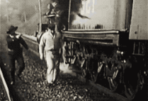
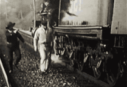

Western
Westerns comumente ressaltam a natureza selvagem permeada pelo paisagismo árido e montanhoso. As histórias são centradas na vida dos cowboys armados com revólveres e rifles, que cruzam a aridez em cima dos seus cavalos.
O marco inicial da história do Western começou com o cinema mudo, em 1903, mediante o curta The Great Train Robbery. Contudo, o gênero só se consolidou a partir da década de 30.


